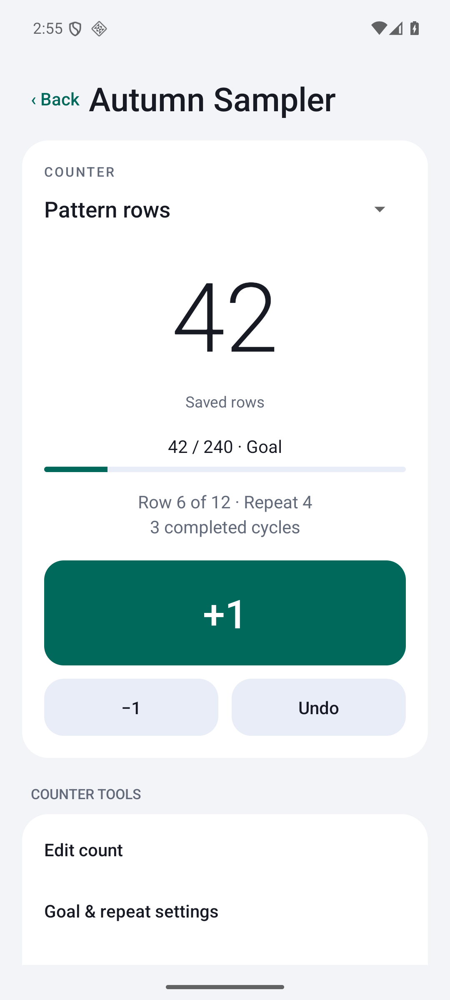
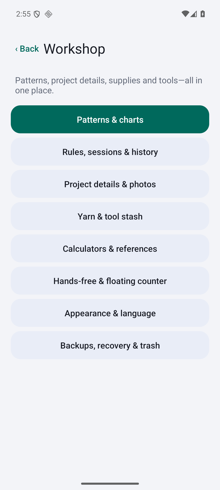
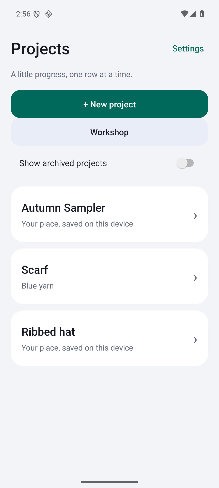
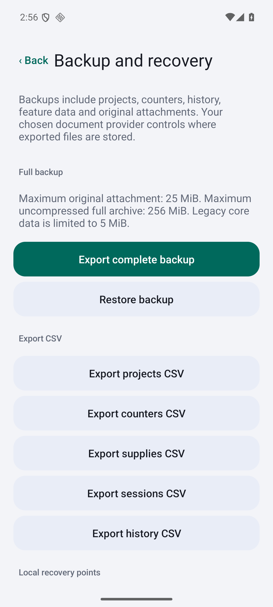

Projects and patterns
Organize projects, PDF and image attachments, reader marks, text patterns and stitch charts. Browse Ravelry, videos and links externally when you choose.
A little more making, a little less remembering
Offline-capable row counters for knitting and crochet. Keep projects, patterns and notes on Android, with an optional connected Wear OS companion.
US $3.99 · Pay once, all features included
Intended US price. Local Google Play prices may differ by region, currency and tax.
App in testing. Row Counter is not yet publicly available on Google Play.

Made for your work in progress
Organize projects, PDF and image attachments, reader marks, text patterns and stitch charts. Browse Ravelry, videos and links externally when you choose.
Use multiple counters, linked rules, row instructions, checkpoints, history and undo. Track sessions and progress.
Keep yarn and tool inventory and project allocations, record project details and photos, and use calculators and reference tools.
Choose themes and six UI languages, or optionally use a widget, floating counter, supported on-device voice and text-to-speech. A paired watch uses Google Play services to communicate with the phone.
A closer look



Actual v2 Android emulator recording. These previews show selected workflows, not every feature or physical-device acceptance.
Your projects belong to you
No ads, app account or developer cloud. Core data lives on your device; uninstall or clear storage removes it. User-directed web access and paired Wear use external services.
Export a full v2 ZIP including attachments, history and trash, or selected CSV data. ZIP limits: 256 MiB uncompressed, 25 MiB per attachment, 5 MiB core. Legacy v1 JSON import is supported. Restore replaces local data after confirmation; dated recovery points and 30-day project trash are local. Protect exports: your document provider may sync them externally.
Read the privacy information →